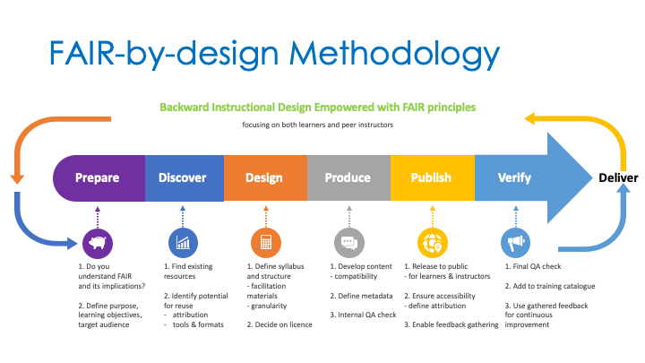

FAIR-by-Design Methodology for Learning Materials Training of Trainers
Webinar
Date/Time: 17-19 October 2023
Location
Training Description
The main goal of this ToT is to provide guidance and instructions on how to use the proposed FAIR-by-Design Methodology for development of FAIR learning materials in practice. The training will take you through all steps in the methodology and showcase their implementation using practical examples and developed templates. 
Target audience
All Skills4EOSC project members that will need to develop learning materials for any type of project-related training.
Expertise Level / Skill Level: Beginner
Primary Language: English
Access Cost: No
Prerequisites
No prior knowledge is required to follow the training, however see Resources and Materials to prepare beforehand
Duration
The training will take place in the course of three days in the half day + full day + half day format. The total length of the training is 12 hours.
Learning Objectives
- Define FAIR learning objects
- Adapt and mix FAIR learning objects
- Identify licenses and attribute correspondingly
- Structure comprehensive learning materials
- Manage file formats and tools
- Define metadata using a schema
- Create and publish FAIR-by-Design learning materials
- Collaborate with other instructors
- Assess FAIR-ness of existing learning objects
Keywords
FAIR, learning objects, methodology, practical implementation
Agenda: Training Schedule - Training Structure
Note: start time is given in CEST
Day 1: FAIR-by-Design Preparation and Discovery
| Start | Step | Topic | Duration |
|---|---|---|---|
| 9:00 | Introduction | 30 mins | |
| 9:30 | Prepare | FAIR skills & principles | 30 mins |
| 10:00 | = coffee break = | 15 mins | |
| 10:15 | Prepare | Defining FAIR learning objects | 60 mins |
| 11:15 | = coffee break = | 15 mins | |
| 11:30 | Discover | Discovering existing learning materials | 60 mins |
Day 2: Designing and Producing Learning Materials
| Start | Step | Topic | Duration |
|---|---|---|---|
| 9:00 | Design | Conceptualisation | 30 mins |
| 9:30 | Design | Licensing and Attribution | 45 mins |
| 10:15 | = coffee break = | 15 mins | |
| 10:30 | Design | Instruction facilitation | 30 mins |
| 11:00 | Design | Materials structure | 30 mins |
| 11:30 | = coffee break = | 15 mins | |
| 11:45 | Produce | Content design | 60 mins |
| 12:45 | = Lunch break = | 60 mins | |
| 13:45 | Produce | Design tools | 60 mins |
| 14:45 | = coffee break = | 15 mins | |
| 15:00 | Produce | Accessibility | 60 mins |
| 16:00 | = coffee break = | 15 mins | |
| 16:15 | Produce | Formats | 30 mins |
| 16:45 | Produce | Metadata | 30 mins |
| 17:15 | Produce | Initial Quality Assurance | 15 mins |
Day 3: Finalising FAIR-by-Design Learning Materials
| Start | Step | Topic | Duration |
|---|---|---|---|
| 9:00 | Publish | Depositing | 60 mins |
| 10:00 | = coffee break = | 15 mins | |
| 10:15 | Publish | Versioning | 30 mins |
| 10:45 | Feedback gathering | 30 mins | |
| 11:15 | Verify | = coffee break = | 15 mins |
| 11:30 | Verify | FAIR verification | 60 mins |
Resources and Materials
All training resources will be available on the FAIR-by-Design methodology course on the learning platform. You will need to self-enrol in the course to gain access to the materials. Additional equipment and software needed to take full advantage of the training activities:
- Headset with microphone
- GitHub account: GitHub SignUp
- Zenodo account: Zenodo SignUp
- Installed Git client: Git Editor
- Installed MD editor: Obsidian
- or you can also use an online demo version such as https://demo.hedgedoc.org/ (for testing purposes only)
Certification Information
All trainees that will successfully pass all training unit assessments available on the course on the learning platform will obtain the “FAIR Instructor” badge.
Authors
Sonja Filiposka, Dominique Green, Anastas Mishev, Vojdan Kjorveziroski, Andrea Corleto, Eleornora Napolitano, Gabriella Paolini, Sara di Giorgio, Joanna Janik, Luca Schirru, Arnaud Gingold, Christine Chardosek, Irakleitos Souyioultzoglou, Carolin Leister, Emma Lazzeri
Trainers
Sonja Filiposka  , Anastas Mishev , Vojdan Kjorveziroski
, Anastas Mishev , Vojdan Kjorveziroski
Contact information
For more information regarding the training please contact the T2.3 FAIR-by-Design Methodology Task Leader Sonja Filiposka using sonja.filiposka@finki.ukim.mk.
License

This work is licensed under a Creative Commons Attribution 4.0 International License.
DOI
https://doi.org/10.5072/zenodo.1224005
Accessibility Mission
Skills4EOSC is dedicated to ensuring that all produced learning materials are accessible to as many visitors as possible regardless of their ability or technology. We have an active commitment to increasing our learning materials accessibility. The main standards that we aim to comply with are WCAG v.2.1 Level AA criteria and PDF/UA (ISO 14289).
Acknowledgement
These learning materials have been developed by following the FAIR-by-Design Methodology.